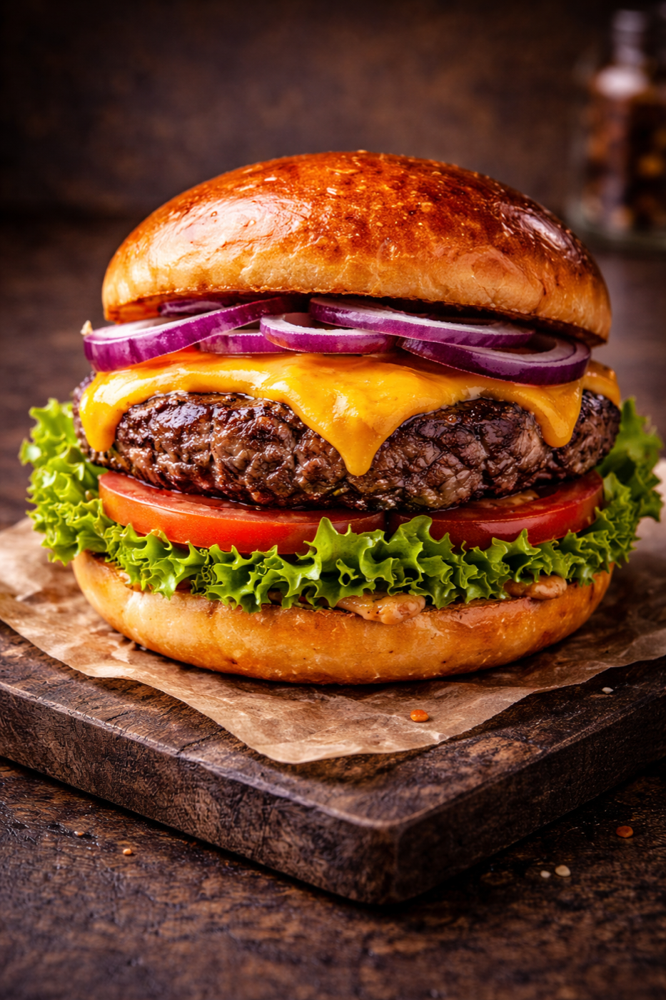
Imaginile produselor au rol de prezentare. Aspectul final poate varia usor in functie de preparare.
Burger de vita cu cartofi
Pret: 40 leiCarne suculenta, cheddar maturat, salata crocanta si sos special.
Str. Revolutiei nr. 4, Adjud • +40 755 516 039
AYSADEN-ANGI SRL
CUI: 50319287 • Nr. Reg. Com.: J22/400050/1390

Imaginile produselor au rol de prezentare. Aspectul final poate varia usor in functie de preparare.
Carne suculenta, cheddar maturat, salata crocanta si sos special.
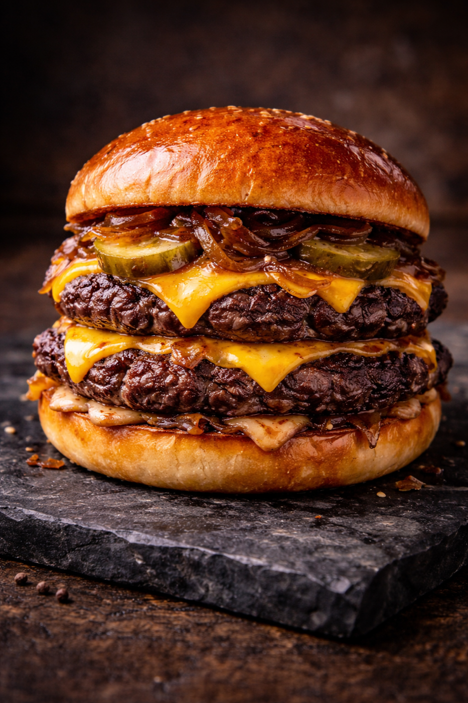
Imaginile produselor au rol de prezentare. Aspectul final poate varia usor in functie de preparare.
Doua straturi de carne, ceapa caramelizata si sos burger house.
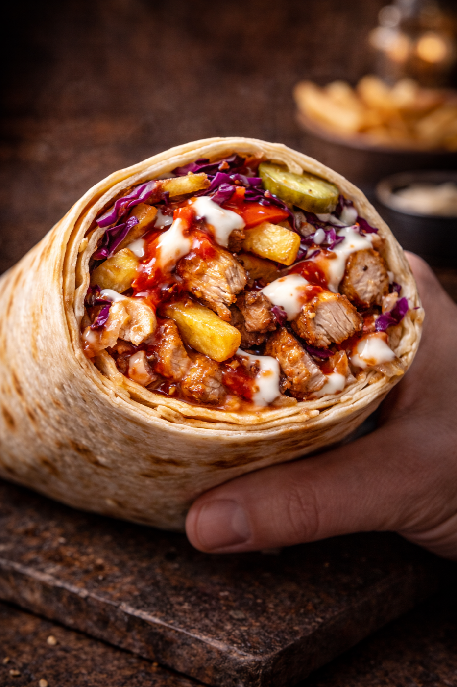
Imaginile produselor au rol de prezentare. Aspectul final poate varia usor in functie de preparare.
Pui fraged, legume proaspete, cartofi si sos usturoi.
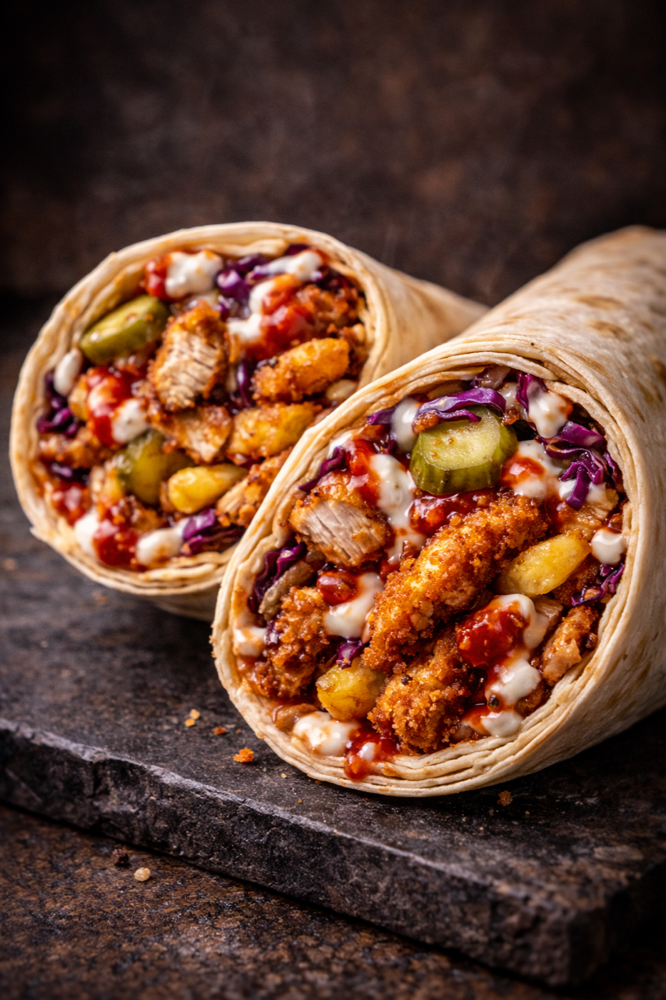
Imaginile produselor au rol de prezentare. Aspectul final poate varia usor in functie de preparare.
Bucati crispy, salata mix, muraturi si sos picant echilibrat.
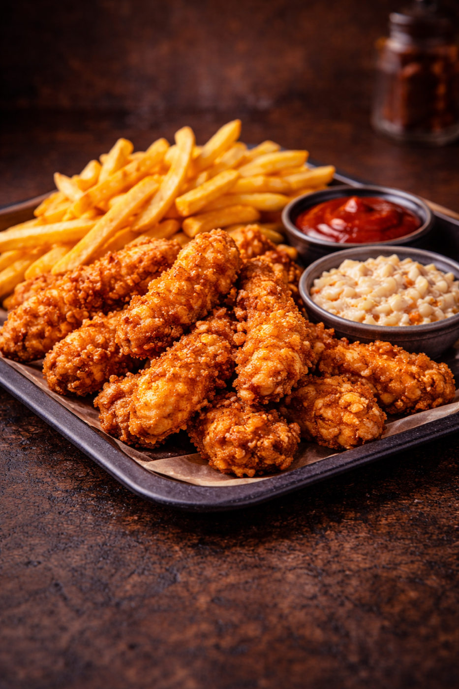
Imaginile produselor au rol de prezentare. Aspectul final poate varia usor in functie de preparare.
Crispy crocant, cartofi aurii, salata coleslaw si sos la alegere.
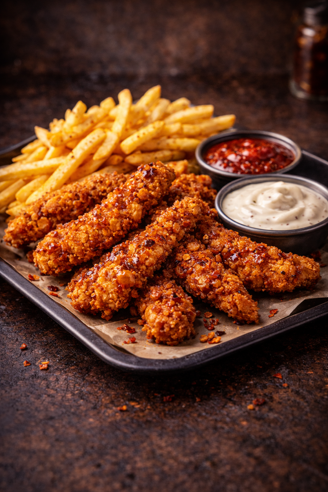
Imaginile produselor au rol de prezentare. Aspectul final poate varia usor in functie de preparare.
Strips condimentat, cartofi prajiti si dip cremos de usturoi.
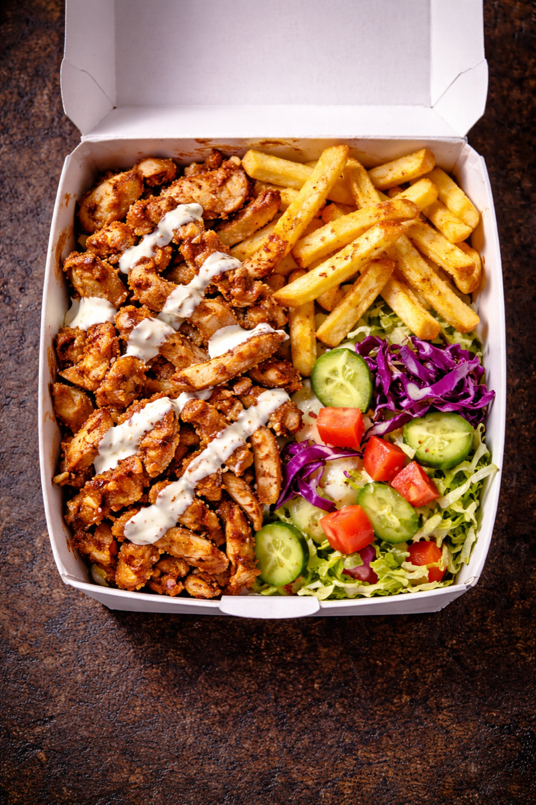
Imaginile produselor au rol de prezentare. Aspectul final poate varia usor in functie de preparare.
Carne doner, cartofi prajiti, salata proaspata si sosuri signature.
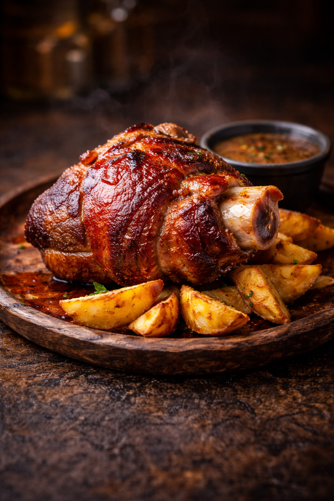
Imaginile produselor au rol de prezentare. Aspectul final poate varia usor in functie de preparare.
Ciolan rumenit lent, cartofi wedges si sos rustic de casa.
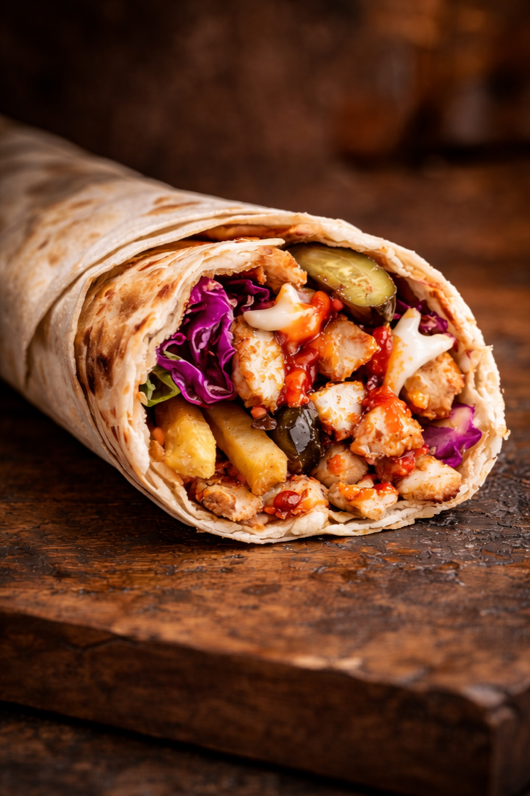
Imaginile produselor au rol de prezentare. Aspectul final poate varia usor in functie de preparare.
Portie mica de shaorma, potrivita pentru o masa rapida.
Imaginile produselor au rol de prezentare. Aspectul final poate varia usor in functie de preparare.
Portie mica cu crispy de pui, salata si sos de usturoi.
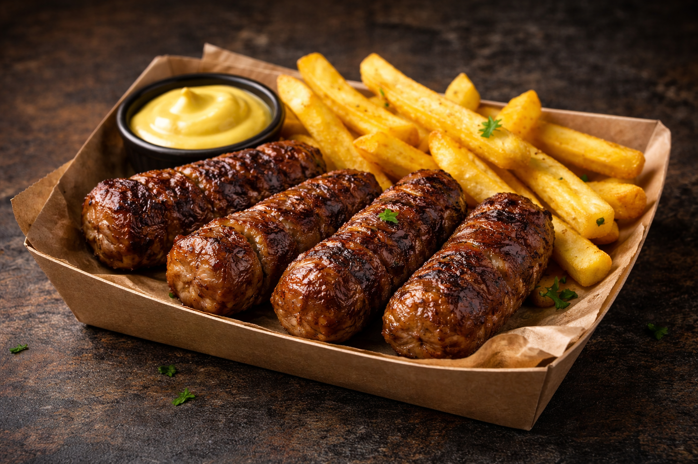
Imaginile produselor au rol de prezentare. Aspectul final poate varia usor in functie de preparare.
4 mici la gratar, cartofi prajiti, paine proaspata si mustar.
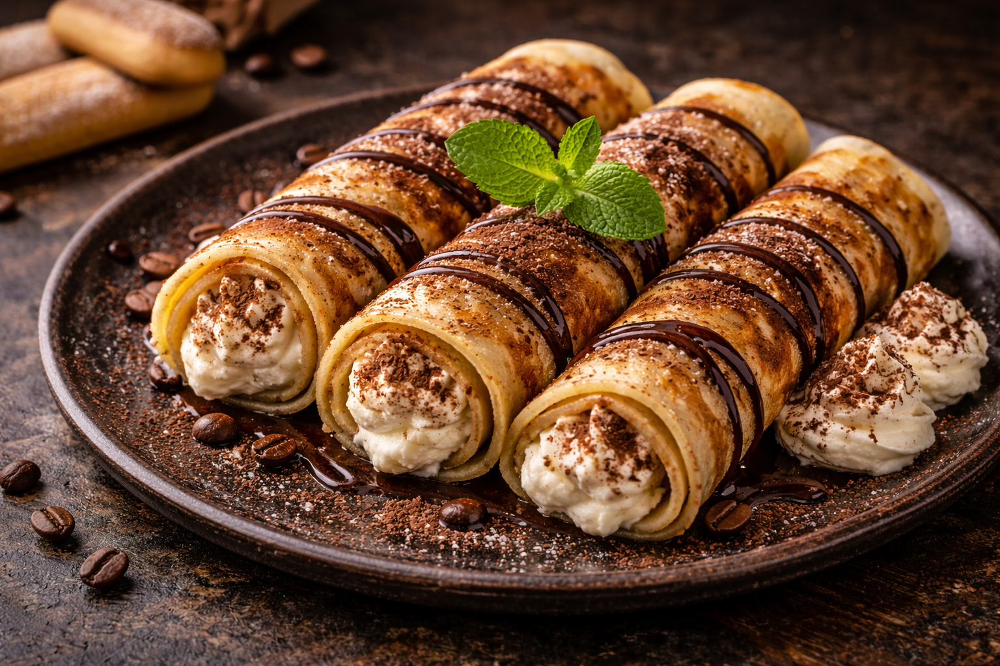
Imaginile produselor au rol de prezentare. Aspectul final poate varia usor in functie de preparare.
Clatite fine cu crema tip tiramisu si topping de cacao.
Imaginile produselor au rol de prezentare. Aspectul final poate varia usor in functie de preparare.
Cafea simpla, servita fierbinte.
Informații legale: prețurile afișate sunt orientative până la confirmarea comenzii.
Pentru sesizări și solicitări GDPR: +40 755 516 039 • Politica GDPR • ANSPDCP • ANPC • SAL ANPC.
Adresă locație: Str. Revoluției nr. 4, Adjud, Vrancea.